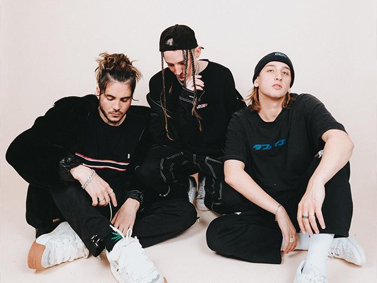
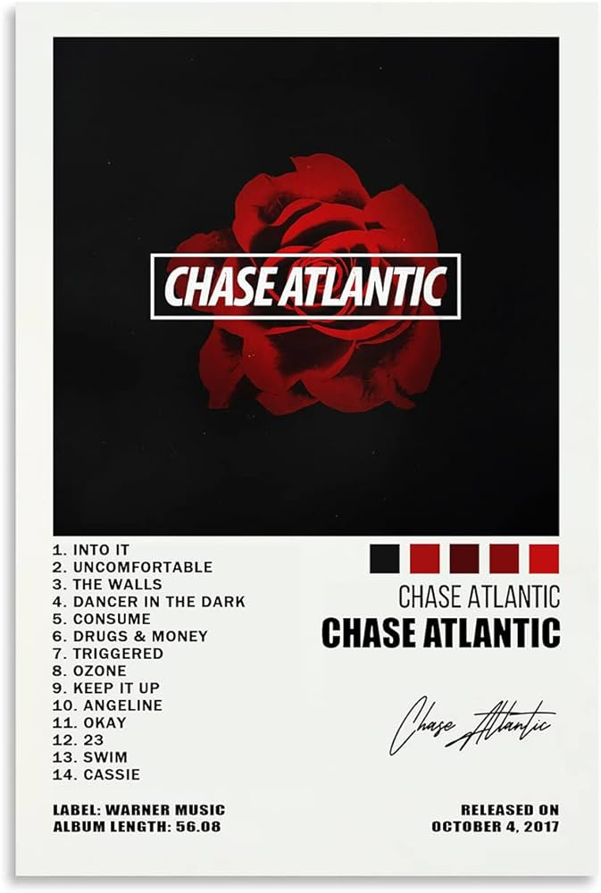

☪ CHASE ATLANTIC ☪


Chase Atlantic (ocasionalmente estilizado como CHASE ATLANTIC) es una banda australiana
de R&B alternativo y un trío de producción de Cairns, Australia, formado en 2014. El grupo está
formado por el vocalista principal Mitchel Cave, el guitarrista rítmico y vocalista Christian Anthony,
el guitarrista principal, el saxofonista y el corista Clinton Cave, el guitarrista de gira Patrick Wilde y
el baterista de gira Jesse Boyle.
Chase Atlantic formó y lanzó su primer EP de estudio Dalliancé en 2014, seguido de su segundo
EP Nostalgia, que fue lanzado en 2015 y generó el sencillo viral "Friends" y los ayudó a alcanzar
popularidad internacional.
A principios de 2017, firmaron con Warner Music Group y lanzaron una
serie de EP (Primera parte, Segunda parte y Tercera parte) para promover el lanzamiento de su
álbum debut homónimo, Chase Atlantic, en octubre de 2017, cuando lanzaron su carrera como
un acto de gira a tiempo completo. La banda continuó lanzando singles independientes "Numb to
the Feeling" y "Tidal Wave" mientras estaban de gira en 2018.El sexto EP de la banda, Don't Try
This, fue lanzado el 25 de enero de 2019. El segundo álbum del grupo, Phases , fue lanzado el 28
de junio de 2019. El álbum fue precedido por los tres sencillos "Her", "Stuckinmybrain" y "Love Is (Not)
Easy", que se lanzaron el 10 de mayo de 2019, el 24 de mayo de 2019 y el 7 de junio de 2019, respectivamente.
-
Miembros
- Mitchel Cave – voz principal, bajo, programación
- Christian Anthony – guitarra rítmica, voz principal, programación
- Clinton Cave – guitarra solista, saxofón tenor, coros, programación
- Christian Anthony – guitarra rítmica, voz principal, programación
-
Canciones
- "Friends" (2015)
- "Paradise" (2016)
- "Slow Down" (2016)
- "Into It" (2017)
- "Swim" (2017)
- OHMAMI (2021)
- "Paradise" (2016)
-
Lugares De Los Conciertos De
- Dallas, TX: The Factory In Deep Ellum, noviembre de 2023
- São Paulo: Centro de Brasil, gira Cold Nights Tour
- Ciudad de México: Pabellón Oeste del Palacio de los Deportes, 12 de mayo de 2023
- Olympiastadion Berlin, 2023
- Bataclan, París, 2023
- Ancienne Belgique, Bruselas, 2023
- São Paulo: Centro de Brasil, gira Cold Nights Tour